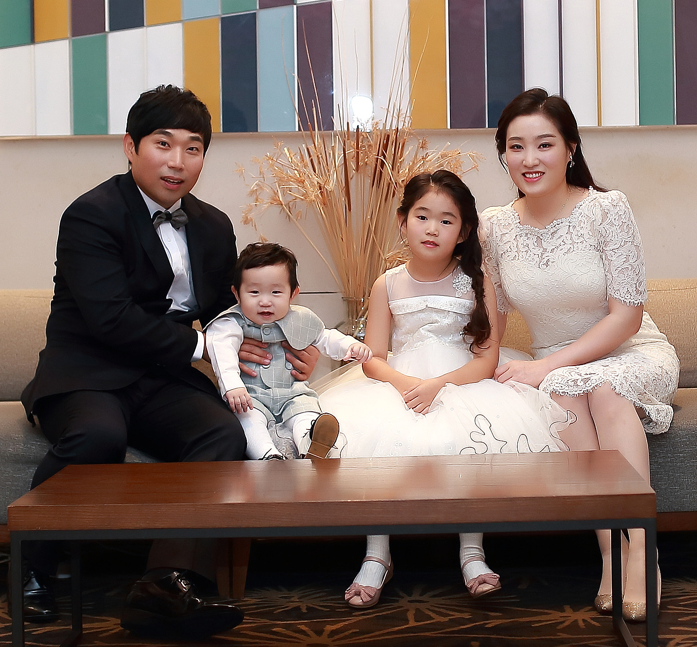

Story of My Family
There are four members in my family: my sweet husband, my smart and beautiful daughter, my adorable son, and me. When I was young, I was introverted and shy. I always felt comfortable around my girlfriends, but being in the same place with male person made me awkward and uneasy. Because of this, I couldn't imagine myself dating, let alone getting married. I didn't have a serious romantic relationship until I was in my early 30s, which often made people around me worry or playfully tease me. Of course, over the years, as I navigated my career and social life, my personality brightened, and I became more outgoing. One day, through the strong recommendation of a close friend, I met my husband. Suprisingly, I didn't feel uncomfortable or awkward around him at all. From our very first meeting, I found him cute and incredibly witty. We connected effortlessly, and before we knew it, we had fallen in love. After just 10 months of dating, we got married. As soon as we got back from honeymoon, we found out that the first baby was came to us. At first, we were both shocked since we hadn't expected a baby so soon, but our families were overjoyed and showered us with congratulations. Raising a baby was more challenging than anything I had ever done, yet it was also an indescribable joy to watch my child grow alongside the person I loved. Initially, we had planned to have only one child, but our parents wished for another, fearing my daughter would feel lonely. At the time, I was focused on advancing my career, and promotion was a major consideration. My company had a conservative work culture, and since I had already taken maternity leave once, taking another leave was a difficult decision. However, just as I was promoted to manager, I found out I was pregnant with my second child. My husband and I were so suprised again, but our parents were overjoyed. My children have a five-year age gap, and my daughter adored and took care of her younger brother from the start. My son is incredibly lovable, capturing everyone's hearts with his charm. Watching my children grow fills my husband and me with immense happiness. This year marks the 12th year of our marrige. My husband is still caring and sweet to me as always. He always puts me first, ensuring that I'm comfortable in every situation. We do everything together, have endless conversations, and genuinely enjoy each other's company. My happy marriage sometimes feels like a dream because I can't imagine living such a joyful life if I hadn't gotten married.